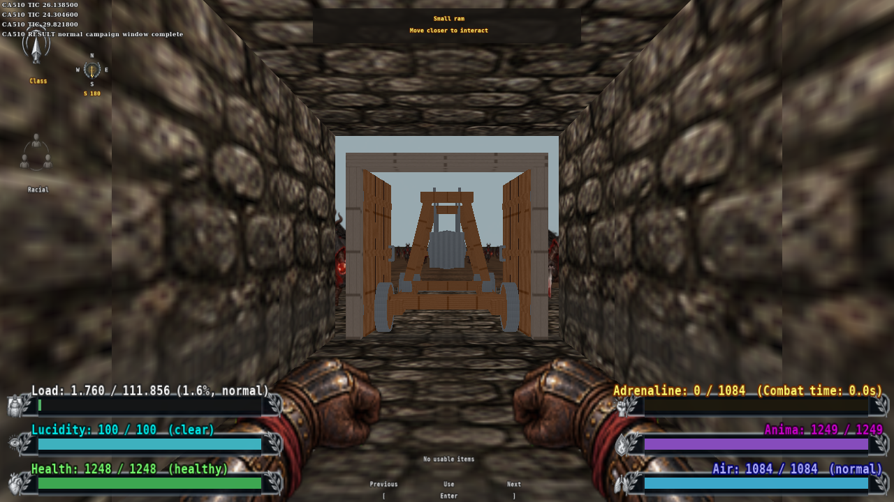
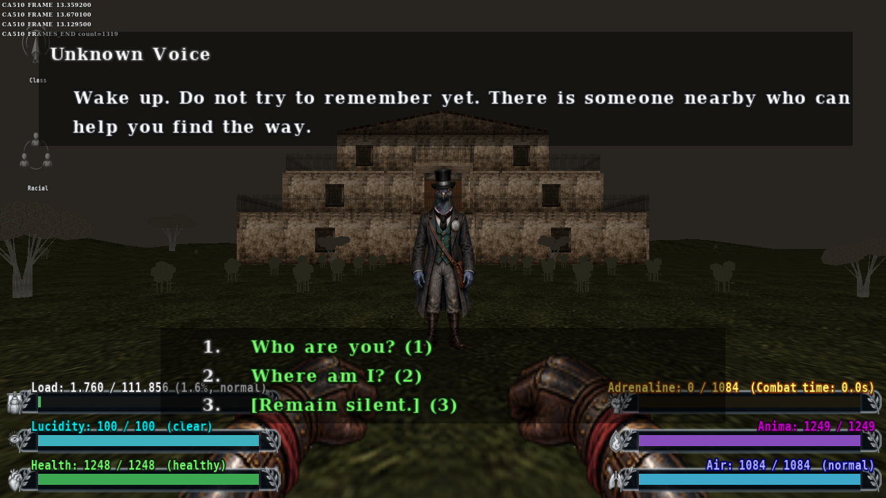
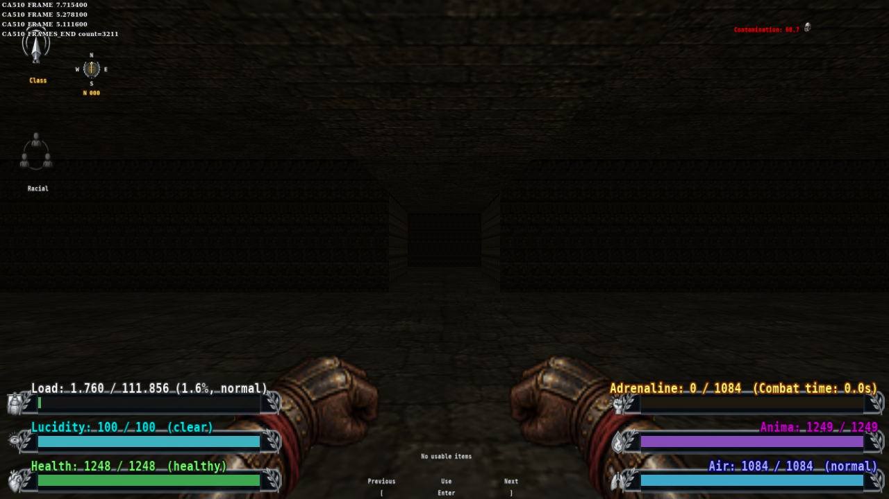
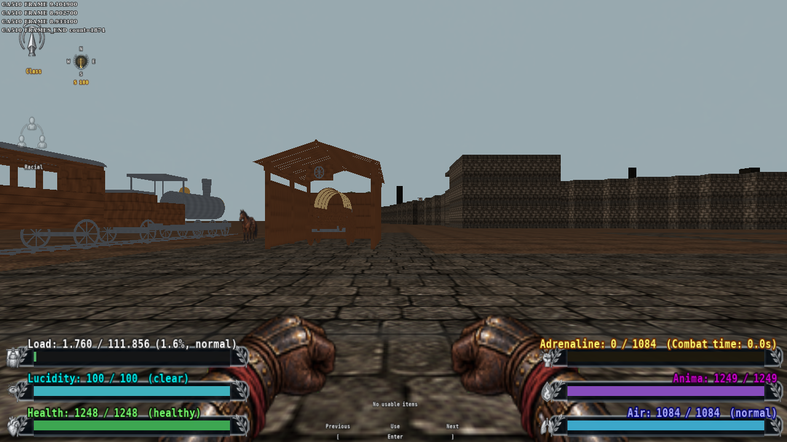
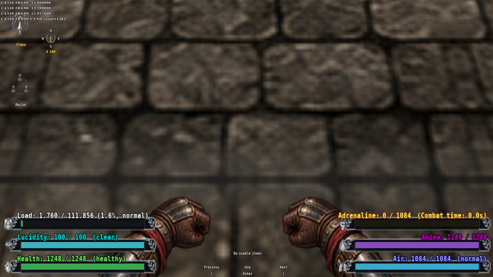

Equivalent contamination Value dispatch, release 5.17.110. Retained art and geometry. These fixed views do not establish route coverage, smooth rendering or author acceptance.
Queue presents are application submissions, not monitor scanout. Full frame/tic tails, configuration and exact package hashes are retained in the evidence summary. The broader batch and consolidated author review remain open.




